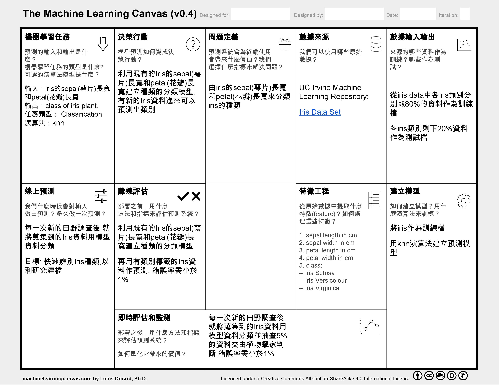

分類是根據已知樣本的某些特徵，判斷一個新的樣本屬於哪種已知的樣本類。分類問題也被稱為監督式學習 (supervised classification)，根據已知訓練區提供的樣本，通過計算選擇特徵參數，建立判別函數以對樣本進行的分類。
機器學習畫布
 Machine Learning Canvas_ClassificationValue Propositions
由iris的sepal(萼片)長寬和petal(花瓣)長寬來分類iris的種類
Data Sources
UC Irvine Machine Learning Repository: Iris Data Set
Collecting Data
從iris.data中各iris類別分別取80%的資料作為訓練檔，各iris類別剩下20%資料作為測試檔
Features
資料欄位說明：
1. sepal (萼片) length in cm
2. sepal (萼片) width in cm
3. petal (花瓣) length in cm
4. petal (花瓣) width in cm
5. class:
-- Iris Setosa
-- Iris Versicolour
-- Iris Virginica
Building Models
將iris作為訓練檔，用knn演算法建立預測模型
模型訓練流程
0.Data Input
檔案上傳
 Data Upload： Select Process Stage
Data Upload： Select Process Stage
 Data Upload： Select Function
Data Upload： Select Function
1.Data Pre-process
從Function欄位中, 選擇Data Pre-processing按鈕, 可進行資料預處理(Pre-process)
 Data Pre-view
Data Pre-view
2.Feature Selection
利用Pearson Correlation演算法計算各個Feature間的關係程度,以作為選擇Feature的參考
 Calculate Pearson Correlation
Calculate Pearson Correlation
 Show Feature Weight Matrix
Show Feature Weight Matrix
 Select Feature and Save
Select Feature and Save